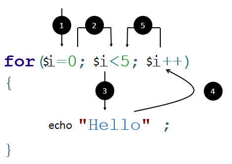

✏️ Exercise 5 - Loops
Introduction
⚠️ Before starting this quest, you must have finished the following quests:
Reminder : A loop allows to repeat an instruction a number of times, according to a condition.

- Initialization of a counter
- Check if condition is still true
- If so, execute the code inside curly brackets. Else the loop ends and following steps are skipped.
- Update value of counter
- Restart to step 2 (while condition is true)
Source: hexainclude
💪 Challenge
Hint:
You can execute your script directly in your terminal using php myScript.php. To display a line break and improve readability, use the PHP constant PHP_EOL (EOL = End Of Line).
e.g. echo 'hello' . PHP_EOL; will display the 'hello' string and add a new line in your console.
Exercise 1 : planting trees 🌳
- Write a loop to plant 3 trees (you should display '🌳🌳🌳').
- Write a loop to plant 8 🌳 .
- Write a loop to plant 20 🌳 .
Exercise 2 : planting more trees 🌲🌴
In previous exercise, you can plant one 🌳 per hour. So in a loop of 8, you plant 8 🌳, easy. Now, you have to plant 🌲, they are more delicate and need to dig deeper. You need 2 hours to plant a 🌲.
Hint: you shouldn't calculate the amount of trees planted before but have the loop do it for you. Probably using a $numberOfHours counter
- Write a loop to plant 🌲 during a 6 hours working day.
- Write a loop to plant 🌲 during a 8 hours working day.
- Write a loop to plant 🌲 during a 9 hours working day.
You have now experience in tree planting. You work now with very delicate and rare tree 🌴. You need 3 hours of work to plant one 🌴.
- Write a loop to plant 🌴 during a 6 hours working day.
- Write a loop to plant 🌴 during a 2 hours working day.
- Write a loop to plant 🌴 during a 8 hours working day.
Exercise 3 : planting a forest
You know how to plant a row of trees 🌳🌳🌳🌳🌳🌳🌳🌳🌳. But you see bigger, and you want now to plant a whole forest.
-
Using 2 nested loops (yes, you can use a loop inside another loop, it's crazy!), display a forest of 8 columns and 3 rows. Use
PHP_EOLto create new lines. You should obtain 🌳🌳🌳🌳🌳🌳🌳🌳 🌳🌳🌳🌳🌳🌳🌳🌳 🌳🌳🌳🌳🌳🌳🌳🌳 -
Bigger now ! Display a forest of 40 columns and 25 rows. You can also use 2 variables to determine the forest width and height. The loops should reflect the values of these variables.
-
Create a forest of 10 columns and 5 rows, with alternate types of trees in each row, as below. (Hint: use modulo operator % to determine if you have a odd or even value)
🌳🌳🌳🌳🌳🌳🌳🌳🌳🌳 🌲🌲🌲🌲🌲🌲🌲🌲🌲🌲 🌳🌳🌳🌳🌳🌳🌳🌳🌳🌳 🌲🌲🌲🌲🌲🌲🌲🌲🌲🌲 🌳🌳🌳🌳🌳🌳🌳🌳🌳🌳
- Create a forest of 7 columns and 8 rows, with alternate types of trees in each column 🌳🌲🌳🌲🌳🌲🌳 🌳🌲🌳🌲🌳🌲🌳 🌳🌲🌳🌲🌳🌲🌳 🌳🌲🌳🌲🌳🌲🌳 🌳🌲🌳🌲🌳🌲🌳 🌳🌲🌳🌲🌳🌲🌳 🌳🌲🌳🌲🌳🌲🌳 🌳🌲🌳🌲🌳🌲🌳
Exercise 4 : planting triangle forest
You can not always plant rectangle shape forest.
-
Create loops to display this triangle shape forest (one more 🌳 in each new line). 🌳 🌳🌳 🌳🌳🌳 🌳🌳🌳🌳 🌳🌳🌳🌳🌳
-
Create loops to display this other triangle shape forest (from largest to shortest line). 🌳🌳🌳🌳🌳 🌳🌳🌳🌳 🌳🌳🌳 🌳🌳 🌳
🧐 Acceptance criteria
- [ ] All the trees are correctly displayed
- [ ] You have understand how to use simple loops
- [ ] You have understand how to nest two loops to solve more complex problems.